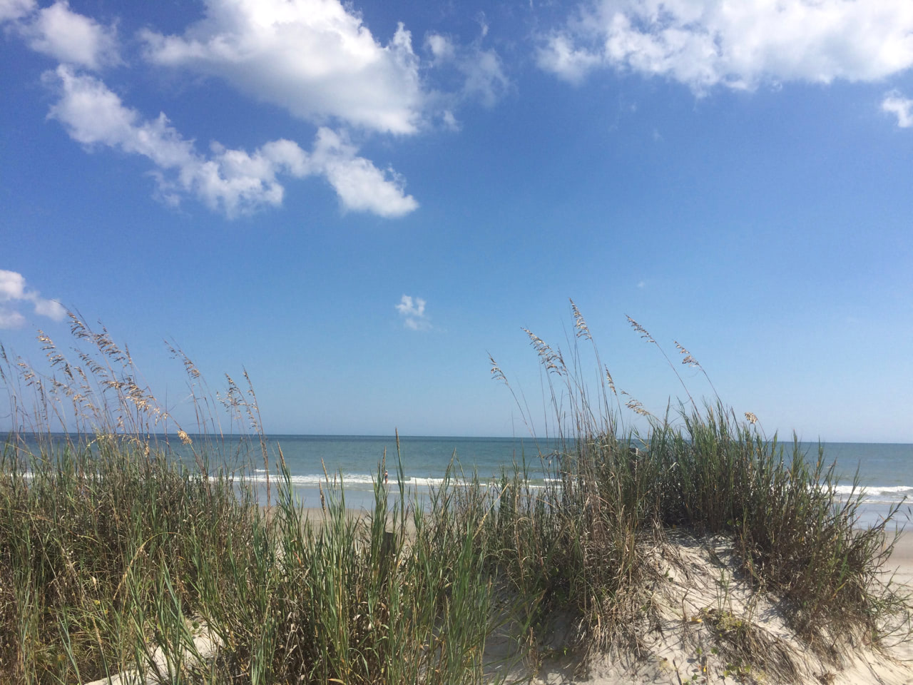

Day 11: North Myrtle Beach — Murrells Inlet
Oct 11, 2014 • 33 miles
No fewer than four times did today’s official ECG cue sheet say “use extreme caution.” I even carried the warnings over to my own route sheets. But those segments weren’t that scary! The secret is using the sidewalks, which is maybe the first advantage of a skateboard over a bike so far.
I realize that I’ve mostly written about road conditions since the first couple days, because it’s been most of what I think about as the day wears on. Sad, but true. I’ll try and change that. For example! Today, a guy idling in his truck at the other end of the intersection from me rolled down his window to shout at me, “you dropped [something] out of your pocket!” While I clearly couldn’t hear him very well, I’m pretty sure those words were correct. Either way, my shorts don’t have pockets. I maintained eye contact with him and shrug-smiled, and he guffawed and replied, “made ya look!” Then he peeled out.
For whatever reasons, the humidity, the heat, the foot traffic and road traffic, or whatever else, I traveled slowly today. About two thirds of the way in, I stopped at Surfside Beach for lunch at Bubba’s Fish Shack, a kitschy seafood place, and dipped my feet in the ocean. There’s something about that, feeling the wet sand in between my toes, the cool rush of the water, and the gentle pull as the tide goes back, that always lifts my spirits. It gave me my second wind.
The streets of downtown Surfside Beach (motto: The Family Beach, as opposed to the shenanigans in MB) were closed for classic car day. Two separate old timers, standing next to their old american muscle cars, gave me the “hang loose” hand gesture as I went past. Still got it!